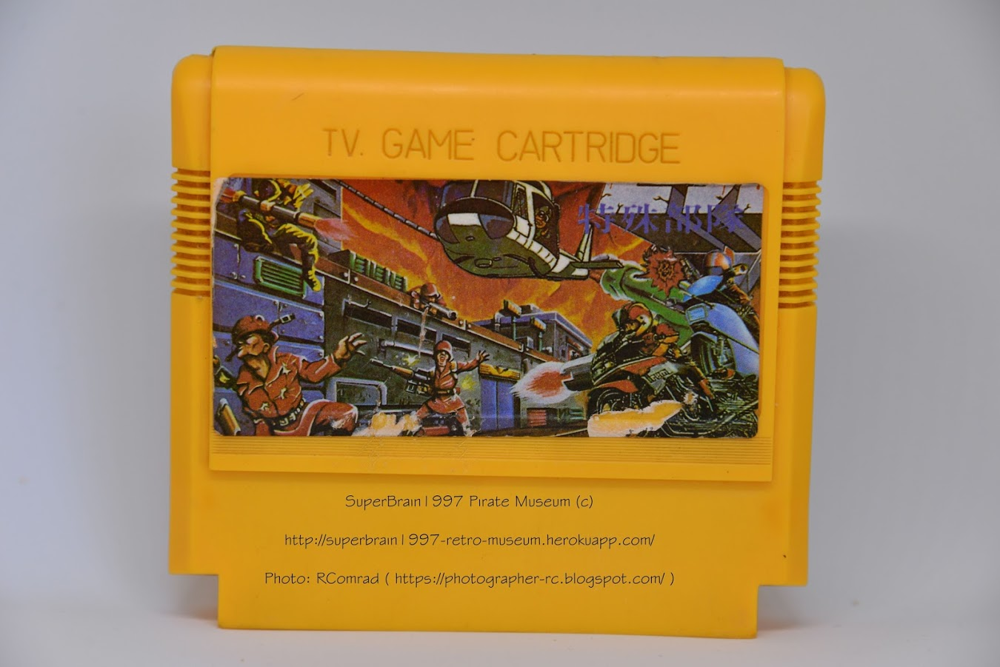
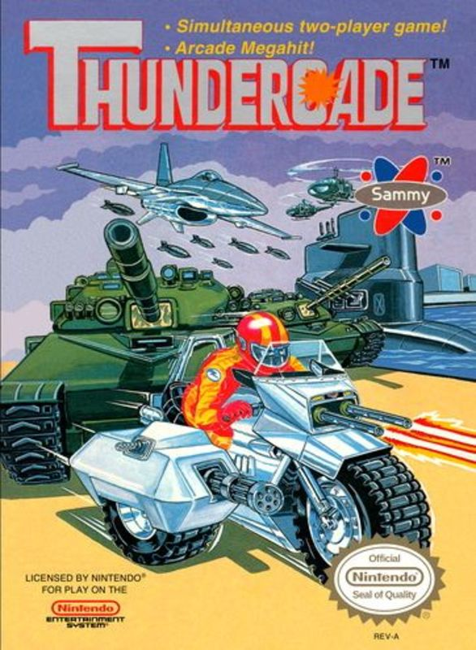
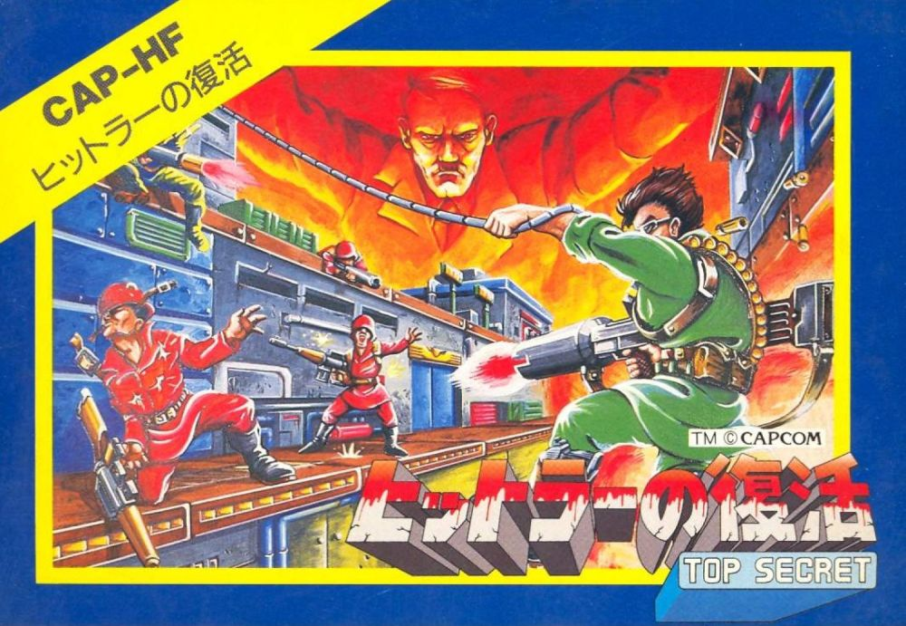
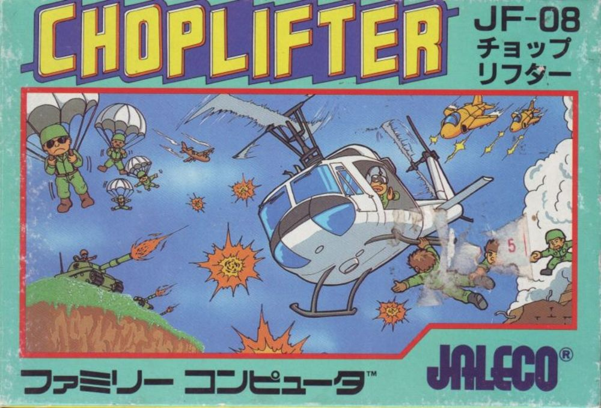
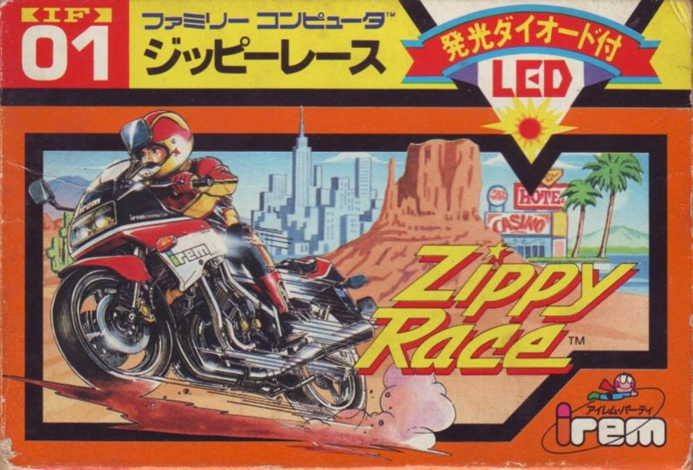
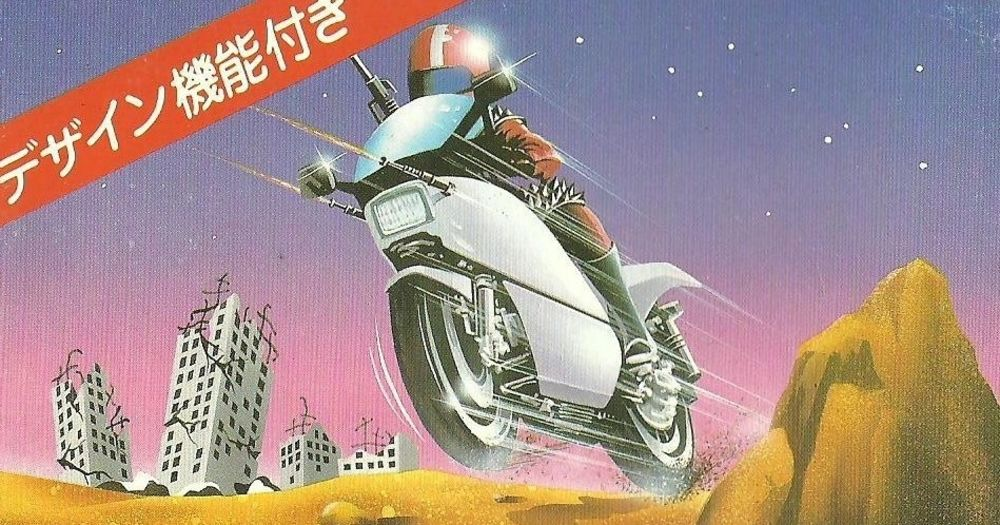

Чудеса обложки Thunder Cade
Дата написания статьи: 10 апреля 2019.Ссылка на пост ВК (оригинал): https://vk.com/wall-87396586_2592
Адаптировано для музея: AlexSRMD
Здравствуйте уважаемые наши читатели, для вас вновь пишет второй админ. В преддверии того, что картридж который я сегодня описываю должен был быть запощен в Инстаграм-канал нашего музея, так совпало что статью о нём я хотел написать ещё давно, но у меня не было времени, но раз так совпало, то значит время точно пришло.
Сам Инстраграм нашего музея здесь, если кому интересно то заходите, подписывайтесь и смотрите на здоровье.
https://instagram.com/spbr97_museum
Сегодня я хотел бы написать пост про еще один интересный купленный давнее время назад мной картридж - 持術部隊

Не очень понятное название, и скажем честно название фиолетового цвета на фоне такого рисунка вообще слабо различается и практически нечитаемо. Тем не менее название переводится как "Удерживающая Сила" и опять таки это мало о чем говорит нам с вами.
Что же, название если вы не знаете китайского языка, то название по сути для вас отсутствует. Давайте попробуем взглянуть на картинку, что мы с вами видим на ней? Мы видим неких солдат, которые отстреливаются из штурмовых винтовок AR-10 (прародителя М16) возле некой военной базы, которую сверху также охраняет вертолёт, а с правой стороны экрана у нас едут мотоциклы. Я сразу замечу что картинка достаточно красивая, и я даже изначально и не думал сколько на ней подводных камней о которых дальше мы и поговорим.
Включив картридж оказалось что игра внутри - это ThunderCade, ну и казалось бы действительно все в порядке - играем за мотоцикл и разносим все и вся, вроде всё даже правильно. Но история началась в тот момент, когда при добавлении на сайт я всего то хотел убедиться, что картинка взята с аналогичной фамиком версии, и вот тогда я и пришел в ужас - игра то не выходила в Famicom-версии, а обложка NES-версии (Фото 2) совершенно не похожа на то, что мы видим с вами здесь.
Задаётся резонный вопрос - ОТКУДА ВЗЯТО?
Скажем честно, в данном случае я совершенно случайно нашел оригинал картинки, на основе которой и была сделана обложка - основа в данном случае это обложка игры Bionic Commando Top Secret (Фото 3). Причем как вы видите на картинке - вертолетом аккуратно закрыта голова, угадайте кого, Адольфа Гитлера, который действительно в Бионик Коммандо имел роль( ну что говорить если игру делали в Японии которая была во Вторую Мировую на стороне стран Оси ), а в Американской версии его естественно заменили на некоего "генерала". Тем не менее вертолётик, который был срезан с обложки игры Chopliffter (Фото 4) закрывает голову и закрывает часть металлического хвата, а главного героя оригинальной игры, неосторожно прикрывает, как это не увдивительно, кусок оригинального японского названия Bionic Commando и также его закрывают мотоциклы, удивляюсь как я сразу не узнал, из игр Zippy Race (Фото 5) и Mach Rider (Фото 6), но с подогнанными под Биониковскую цветокоррекцию цветами.
Это достаточно необычно, когда пираты берут обложку одной игры и при помощи фотошопа 90-ых годов, так сказать, изобретают новую, для игры которая на Famicom не выходила. И как вывод я могу сказать так: Я согласен, что достаточно нелепо и странно сделан коллаж при детальном рассмотрении, но я думаю читатель согласится со мной, что данная обложка по смыслу и по внутреннему содержанию вообщем-то подходит под то, чем должно быть.
В общем, довольно интересная история получилась, и вот таких историй у меня еще много, все таки разного рода сюрпризов при покупке и изучении разного рода картриджей достаточно много, и все их ещё я обязательно опишу. Но на сегодня я думаю мою статью можно завершить.
Спасибо за внимание, для вас писал второй админ паблика - Нейрбов Александр.
Картридж в нашем музее: https://superbrain1997-retro-museum.herokuapp.com/cartridges/562
Галерея




